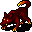

犬の一覧 List of canines
英語版 CrawlWiki の記事「List of canines」(0.28 向け、2023-06-10 版)の翻訳です。原文の著者は編集履歴をご覧ください。
この記事は 0.28 の時点の内容で、最新の 0.34 とは違うところがあるかもしれません。
犬は、Crawl のあちこちで見かける、死肉あさりや狩りをする獣だ。出会うモンスターの中では弱いほうだが、どれも普通の冒険者より足が速く、たいてい群れで行動する。鋭い鼻のおかげで盲目にならず、透明なものも見える。
犬はたいてい迷宮と獣の棲み処(特に猟犬がテーマの獣の棲み処の最下層)にいるが、もっと変わった場所で見かける種類もいくつかある。犬族のしもべの召喚の呪文で呼び出せるものもいる。
犬の種類
h  ジャッカル: 迷宮の浅い階に棲む、弱い死肉あさり。一匹ずつなら弱いが、見通しのいい場所で群れに捕まると、駆け出しの冒険者は倒されかねない。
ジャッカル: 迷宮の浅い階に棲む、弱い死肉あさり。一匹ずつなら弱いが、見通しのいい場所で群れに捕まると、駆け出しの冒険者は倒されかねない。
h  ハウンド: 迷宮の浅めの階にいる、足の速い一匹狼の犬。
ハウンド: 迷宮の浅めの階にいる、足の速い一匹狼の犬。
h  狼: 野生の地で群れをなして狩りをする、並外れて速い獣。グルムのお供としても出てくる。
狼: 野生の地で群れをなして狩りをする、並外れて速い獣。グルムのお供としても出てくる。
h  ワーグ: オークの坑道でオークの主人と暮らす、巨大で獰猛な狼。毒に耐性がある。
ワーグ: オークの坑道でオークの主人と暮らす、巨大で獰猛な狼。毒に耐性がある。
h 

h  雷獣: アビスの狼。自らを稲妻のボルトに変えて、獲物を貫いて飛び込んでくる。
雷獣: アビスの狼。自らを稲妻のボルトに変えて、獲物を貫いて飛び込んでくる。
h  忘却の猟犬: タルタロスの陰気な猟犬。この世ならぬ遠吠えで、侵入者のもとに死をもたらす狩人を呼び寄せる。
忘却の猟犬: タルタロスの陰気な猟犬。この世ならぬ遠吠えで、侵入者のもとに死をもたらす狩人を呼び寄せる。
削除された犬
h  軍用犬: 戦いの訓練を受けた犬。噛みつきが痛く、群れで動く。0.13 で削除されるまでは、獣の棲み処やグルムのお供として出てきた。
軍用犬: 戦いの訓練を受けた犬。噛みつきが痛く、群れで動く。0.13 で削除されるまでは、獣の棲み処やグルムのお供として出てきた。
h  霊の狼: 半ば実体を持たない獣。縄張りの森に踏み込んだ者を、大きな群れを呼び集めて狩り立てた。0.14 で追加が検討された。
霊の狼: 半ば実体を持たない獣。縄張りの森に踏み込んだ者を、大きな群れを呼び集めて狩り立てた。0.14 で追加が検討された。